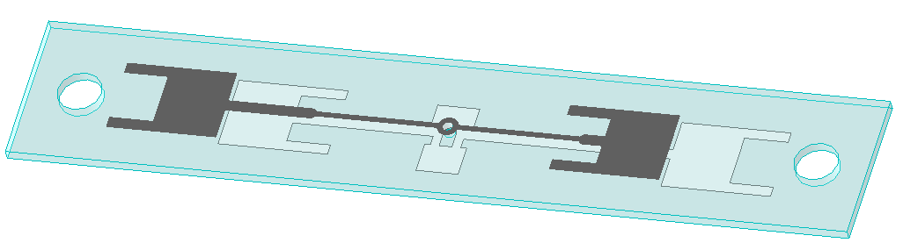

高增益全向车载阵列天线
工作在 5.9–7.2 GHz 的车载阵列天线：在水平面维持 360° 全向覆盖 的前提下， 用交错阵列排布把增益换到 7 dBi，带内 VSWR 守在 1.5 以下。企业实习产出，方案专利申请中。
项目概述/ Overview
「全向」和「高增益」共用同一份能量预算，本页记录这笔交换怎么做。
设计并实现 5.9–7.2 GHz 频段全向性高增益车载阵列天线，采用交错阵列排布， 在保持水平面全向辐射特性的同时把增益做到 7 dBi，带内 VSWR < 1.5， 用于车顶受限高度下的宽带无线链路。
难点不在「能不能变高增益」，而在增益从哪里来。车装天线要求任何行驶方向都不出盲区， 水平面必须 360° 平坦；而增益的定义恰恰是把功率收进更小的立体角。全向条件下唯一可动的杠杆是 垂直面 —— 增益只能靠压窄垂直波束换取，两个面之间没有同时变好的余地。
第二重约束来自安装本身：车顶高度限制阵面可占的剖面，可用面积限制阵元可拉开的距离， 而间距本身还要同时满足栅瓣与互耦两端的要求。阵列形式（交错排布）正是在这几个上限之间求得的折中 —— 用排布方式换增益，而不是用尺寸换。
设计之外的工作同样由企业侧交付要求决定：完成天线性能测试与数据分析， 协同结构团队解决工程集成问题，撰写设计文档、测试报告及专利申请文件。
技术规格/ Specifications
按带内最差情况验收，不以中心频点单点定成败。
- 工作频段
- 5.9 – 7.2 GHz绝对带宽 1.3 GHz
- 增益
- 7 dBi全向条件下
- 方向性
- 全向水平面 360° 覆盖
- 驻波比
- < 1.5带内
- 阵面形式
- 阵列 · 交错排布
- 结构形式
- 紧凑型受车顶高度约束
- 验证方式
- 性能测试 · 数据分析
- 交付文档
- 设计 · 测试 · 专利
- 知识产权
- 发明专利申请中
技术方案/ Approach
每条说的是为什么这么做，而不只是做了什么。
- 增益只从垂直面换 —— 水平面越平，可支配的立体角越少，增益只能来自垂直波束收窄；先在指标里承认这条守恒关系，再谈设计，避免用「全向 + 高增益」两个词互相抵消。
- 交错阵列排布 —— 车顶可布置面积有限，规则排布会让阵元在某些方位靠得过近，互耦随方位角起伏，全向圆随之变形；交错排布用同样的外接尺寸换取更均匀的等效间距，代价是馈电路径更长、布局更难对齐。
- 间距按带宽两端定 —— 间距过密互耦强、过疏出现栅瓣；1.3 GHz 带宽意味着同一间距要在带高端避免栅瓣、在带低端避免耦合塌陷，因此间距取两端都能接受的区间，而不是按中心频点优化。
- 匹配与馈电一致性同批收敛 —— VSWR < 1.5 只在中心频点达标没有意义：带内任何残余失配都会以幅度滚降的形式破坏水平平坦度，所以匹配网络与阵元馈电一起按带内最差情况设计。
- 安装面参与设计，与结构团队同步联调 —— 车顶金属面本身就是方向图的一部分，支架、开孔与邻接结构会改写实测结果；因此工程集成问题不等到装配阶段才处理，测试与结构方案并行推进。
项目图档/ Figures
点击放大，滚轮缩放、拖拽平移，方向键翻页。



FIG 01
项目成果/ Outcomes
指标之外，留下的是可交接的文档与专利申请文本。
在水平面维持全向覆盖的前提下取得，增益由垂直波束收窄换得，非两个面同时提升。
覆盖 5.9 – 7.2 GHz，同一副阵面在带内两端都守住匹配与方向图。
按带内最差情况控制失配，避免幅度滚降破坏水平面平坦度。
技术方案已提交发明专利申请，并完成性能测试、数据分析与结构集成，交付设计文档与测试报告。